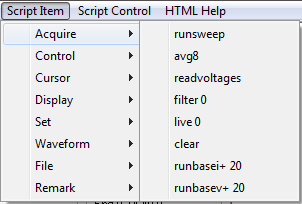

runsweep Initiates acquistion of a single trace. It is the same as pressing the
Run Sweep button.
avg8 Initiates averaging of eight trace sweeps. It is the same as pressing the
Avg 8 button.
readvoltages Initiates a DC read of the collector voltage and current. It is the same as pressing the
Read Voltages button.
filter 0 Un-Checks the
Filter On check box.
filter 1 Checks the
Filter On check box.
live 0 Un-Checks the
Live check box.
live 1 Checks the
Live check box.
clear Clears all stored trace data.
runbasei+ n Performs a
Run
Sweep then adds the signed integer
n, that follows the command (positive or
negative), to the Base current value. A
Set Base I is then executed.
runbasev+ n Performs a
Run
Sweep then adds the signed integer
n, that follows the command (positive or
negative), to the Base voltage value. A
Set Base V is then
executed.
Script Item:
Main: